Birdwatching
Birdwatching 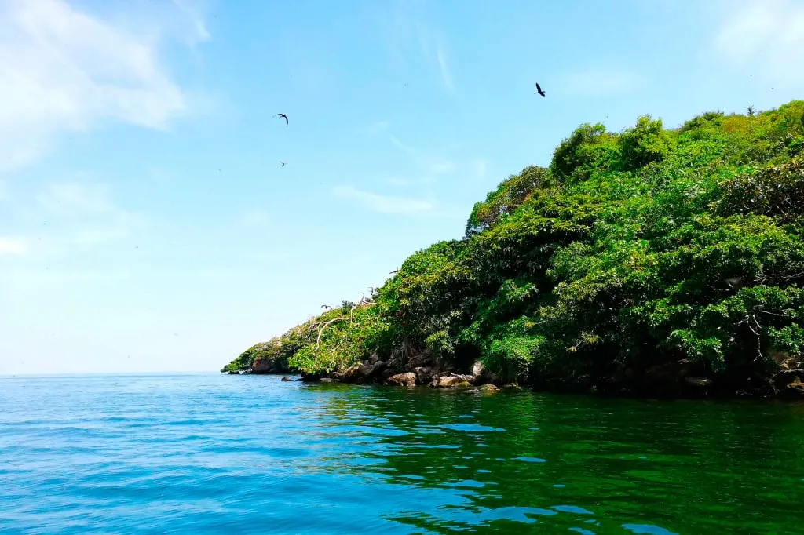
The most popular tourist routes pass through the northern and southern national parks of the country which are among the most explored hotspots in Tanzania in terms of bird species diversity. These include the popular Serengeti and Ngorongoro, Lake Manyara which is known since Hemingway's time, a national park that includes Mount Kilimanjaro, as well as the southern Mikumi, Selous, and Nyerere, along with the vast wilderness expanses of Ruaha NP. However, there are also less explored and rarely visited places in Tanzania. This does not mean that adventures looking to go on Tanzania birding tours have nothing to do there.
In the northwest of the country, there are numerous rich habitats that attract thousands of birds of various species. These locations have plenty of water: from the Kagera lakes with swamps to the local rivers that supply Lake Victoria, and the enormous lake itself with its papyrus reeds and islands covered in dense forest. Several years ago, the Tanzanian government established several new national parks here, which have not yet received comprehensive lists of species inhabiting them. These protected areas are in need of passionate birders that are ready to on Tanzania birding trips and help explore the amazing local avifauna
Burigi-Chato National Park
Adjacent to Lake Victoria, the largest lake in Africa, is Burigi-Chato National Park, which covers extensive territories and ranks as the sixth-largest national park in Tanzania in terms of area. It stretches from the shores of the lake to neighboring Rwanda. This area is characterized by hilly terrain covered in forests. There are also rivers and the impressively long Lake Burigi. When it comes to this lake, it’s not easy to precisely measure its length - it ranges from 18 to 30 kilometers (11.2 to 18.6 miles). This phenomenon is common for this part of Africa, as many water bodies here fluctuate between being filled with water and drying up. The lake, rivers with floodplains, and permanent marshes make this place attractive for birds.
Several individuals of the Shoebill (Balaeniceps rex) have been spotted here, and it is speculated that they may nest on these territories. This solitary bird prefers inaccessible marshy areas. There is no data on their population in Tanzania, and any place where they have ever been seen arouses great interest among birdwatchers. Burigi-Chato National Park is one of the few suitable locations where this rare bird might nest.
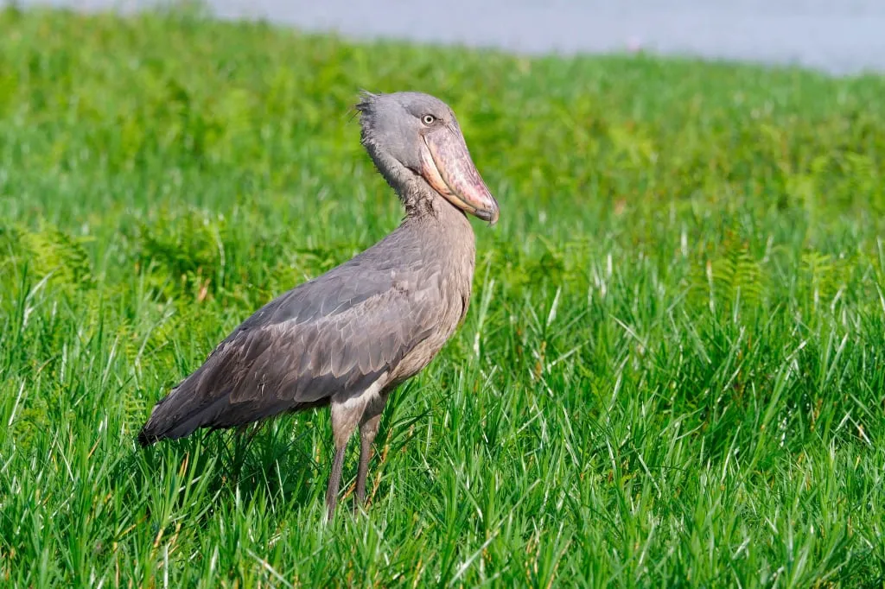
There were reports of seeing the Red-faced Barbet (Lybius rubrifacies) here. These birds have a limited range and are found only in this part of Tanzania and neighboring countries. They can be spotted in forests or grasslands with isolated trees. Red-faced Barbets often live in pairs or small family groups. Not much is known about them, so observing their behavior can be a fascinating activity. The Miombo Rock Thrush (Monticola angolensis) and Arnot's Chat (Myrmecocichla arnotti), which typically live much further south, have also been observed in the national park.
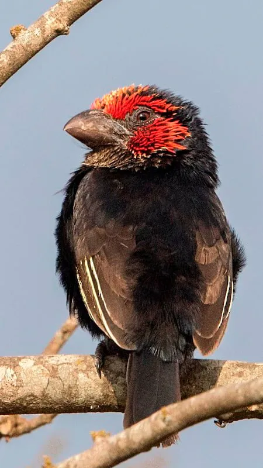
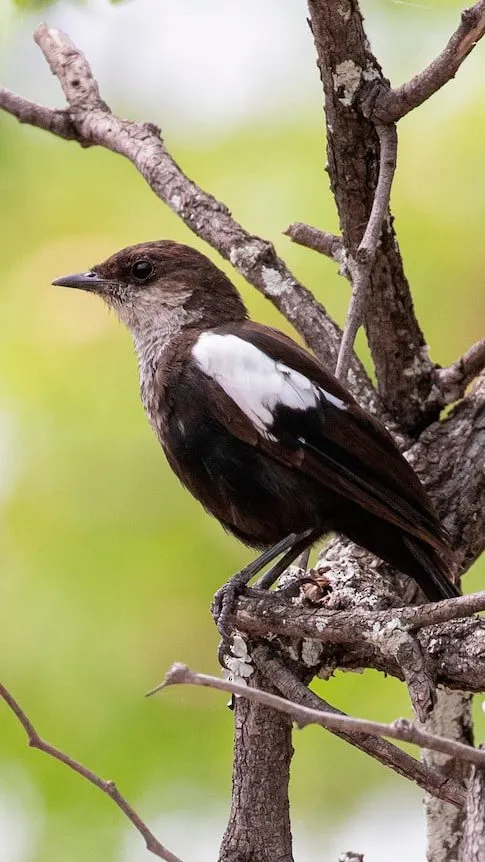
These vast areas are a good habitat for the Corn Crake (Crex crex) and the Great Snipe (Gallinago media). At the very least, these migratory birds use the national park's territory as a resting place during their long flights. The Great Snipe is renowned for its extraordinary migratory capabilities, covering enormous distances without rest. Their migration spans an impressive range of 4,000 to 7,000 kilometers (2,485 to 4,350 miles), which they accomplish in an average of three days. Not only do they often cover several thousand kilometers without stops, but their flight speed is also remarkable. Great Snipes are considered one of the fastest migratory birds, reaching speeds of up to 97 km/h (60 mph). Furthermore, they may hold the record for the highest altitude reached, as a representative of this species was spotted at 8,700 meters (28,543 feet) above sea level! It's truly astonishing to think that such a tiny bird is capable of such incredible feats.
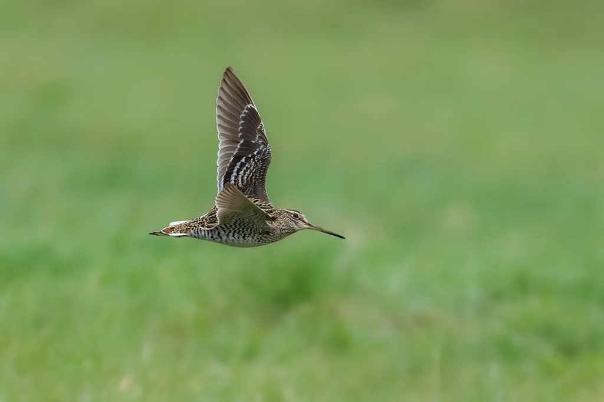
Checklists for this area note Black-lored Babblers (Turdoides sharpei) - noisy birds who occupy bushes and tall grass in flocks, as well as Ring-necked Francolins (Scleroptila streptophora), which prefer grassy rocky hills. Like all francolins, they quickly flee when sense danger, but these birds are particularly skittish. It is believed that spotting them is easiest early in the morning.
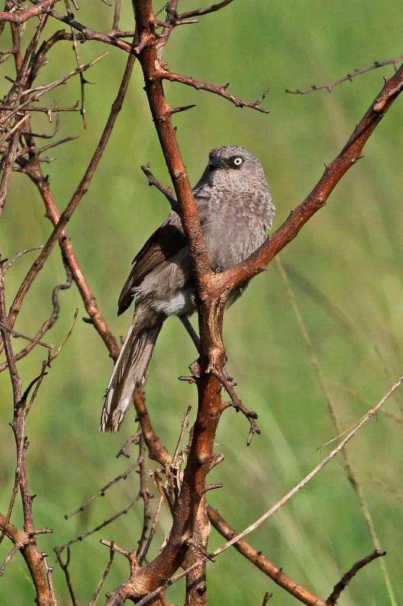
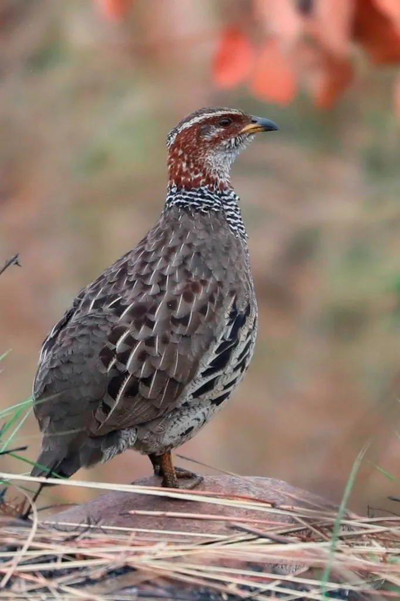
Burigi-Chato National Park, until recently, consisted of the Burigi, Biharamulo, and Kimisi Game Reserves. This area is still described in the old way in many sources. It is surprising that there are no comprehensive lists of bird species for this part of Tanzania, and the area is poorly studied. Only a few dozen species have been documented, even though such a diverse habitat should support a greater number of bird species. It is likely that the number of bird species here is close to 400. Hopefully, in the coming years, these unexplored areas will attract more tourists, including avid birders. This way, we will gain a better understanding of bird life in northwestern Tanzania.
The wetlands of the Kagera River
In northwestern Tanzania, along the border with Rwanda, runs one of the longest rivers in the country, the Kagera River. It is considered the most remote headstream of the Nile River system. The river gives its name to the region of Tanzania and the national park in neighboring Rwanda, Akagera. Almost along its entire course, the Kagera River creates a vast floodplain with marshes, with a total catchment area of 60,000 square kilometers (23,166 square miles). Ultimately, the Kagera River is the largest tributary of Lake Victoria. There are also several lakes on these lands. And of course, all that abundance of water habitats attracts numerous bird species.
In 2019, three national parks were established near the Kagera River: Burigi-Chato, Rumanyika-Karagwe, and Ibanda-Kyerwa. Research on animal and plant life continues on their territories, safari routes are being developed, and logistical facilities for tourists are being planned. In short, detailed research of this region, including ornithological studies, is still ahead. You have a unique opportunity to be among the first explorers of bird life in western Tanzania, west of Lake Victoria. The Rwandan Akagera National Park serves as an inspiring example, literally dotted with hotspots for birdwatchers, as it has been in existence for almost a century and is considered one of the largest along the Nile River system. Undoubtedly, the Tanzanian part of the Kagera floodplain will receive its share of attention in the coming years. Currently, the avifauna of these places is poorly studied and described only in general terms as an important bird zone in the marshes of the Kagera River.
The presence of the Papyrus Yellow Warbler (Calamonastides gracilirostris) has been documented in this area. This bird is relatively rare in East Africa and can be found exclusively in papyrus and reed beds, as implied by its name. Another warbler - the Greater Swamp Warbler (Acrocephalus rufescens), has a somewhat similar name but is much more conspicuous and has a significantly broader distribution range. While there are certain resemblances between the Papyrus Yellow Warbler and other birds, there are distinct characteristics that set it apart, including a greener upper body, a broader beak, and slender legs and tail. Notably, their songs also differ, which can be a significant factor in species identification. Therefore, it is crucial to be attentive when differentiating between similar species.
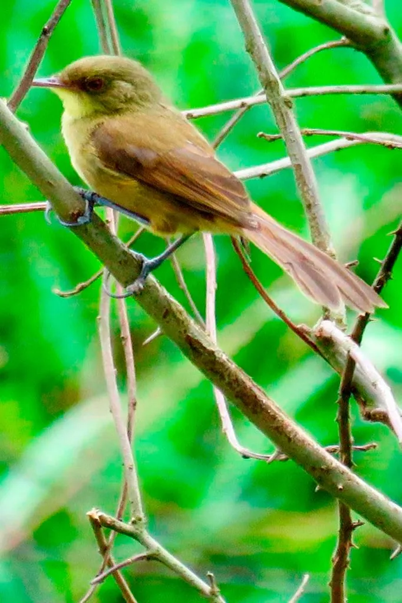
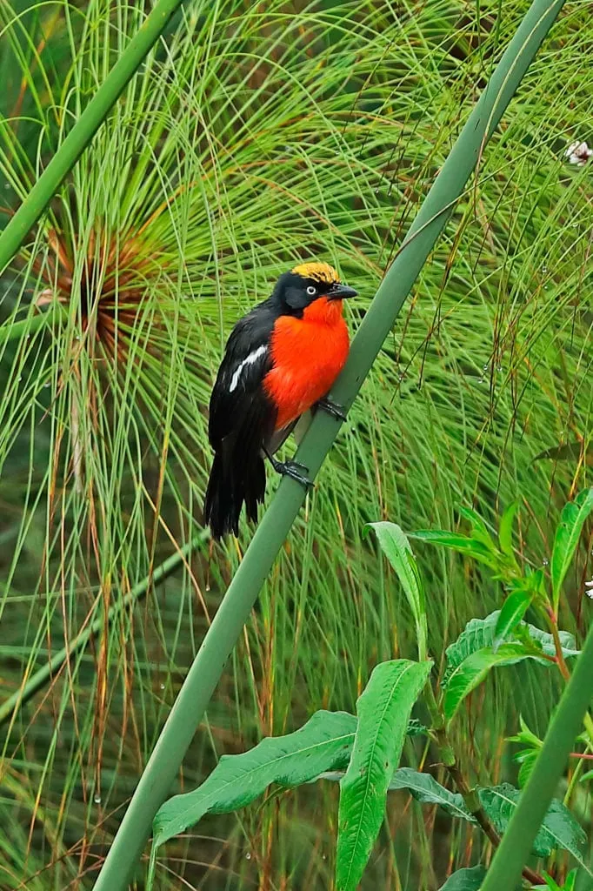
The Shoebill (Balaeniceps rex) has also been observed here, although rarely and in small numbers. It is presumed that there are more of them in these areas. The Common Snipe (Gallinago media) has been recorded here, but also infrequently. However, the Papyrus Gonolek (Laniarius mufumbiri), is found along almost the entire course of the Kagera. It is a beautiful bird with a yellow "cap" on its head, and its breast and belly are described as bright pink-orange. Its noisiness, including whistling and creaking sounds, will help you locate it in the papyrus bushes.
It is known that the Kagera swamps are home to the White-winged Swamp Warbler (Bradypterus carpalis) from the Locustellidae family and the Papyrus Canary (Crithagra koliensis) from the true finches family. The latter builds nests directly on papyrus stems, using the leaves of this plant. As evident from the names, many birds in the region depend heavily on the type of flora prevalent along the Kagera River.
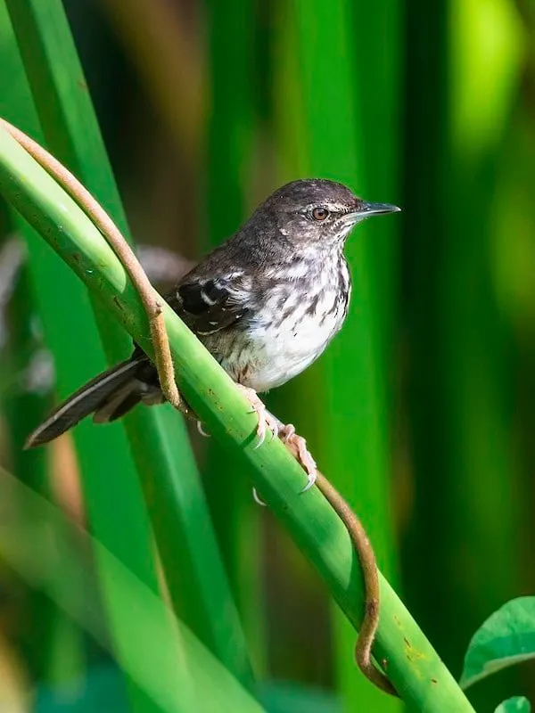
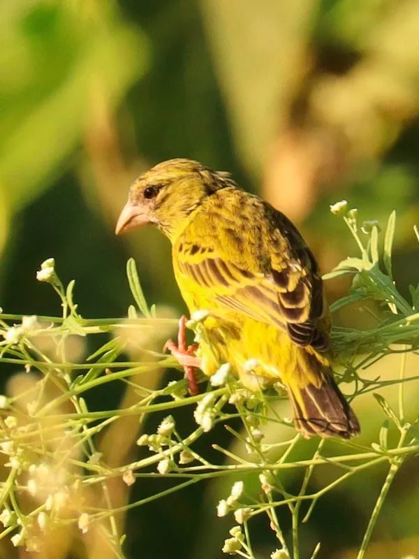
Minziro Forest Reserve
To the north, near the border with Uganda, there is an important forest reserve located on a highland. Here over 200 bird species have been recorded, with several dozen species more characteristic of Uganda's forests rather than Tanzania's. This is one of the places with truly unique habitats.
Here, you can observe the Woodhouse's Antpecker (Parmoptila woodhousei), which normally inhabits the other end of the continent, belonging to the biome of Western and Central Africa. The African Shrike-flycatcher (Megabyas flammulatus) has been spotted in the local forests too. In addition, It is interesting to spot the Dusky Long-tailed Cuckoo (Cercococcyx mechowi) here. The western coast of Lake Victoria is the only place in Tanzania where it can be observed.
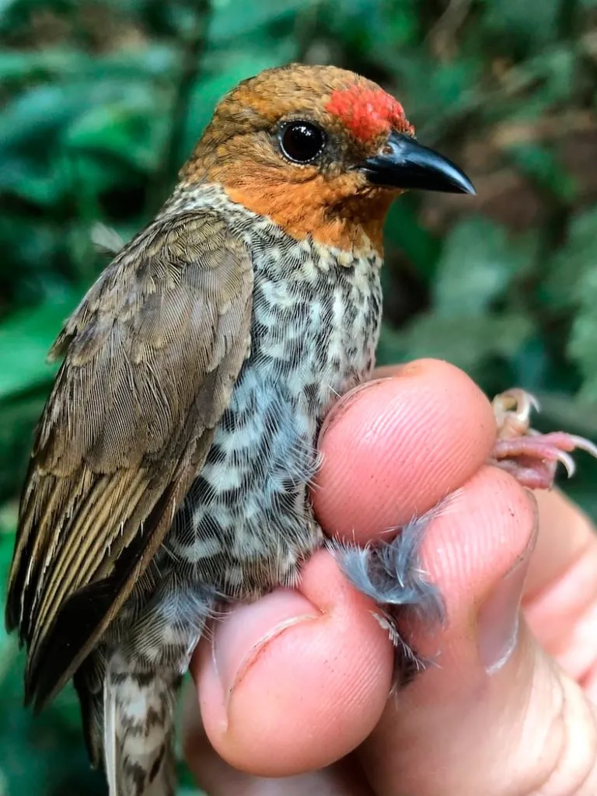
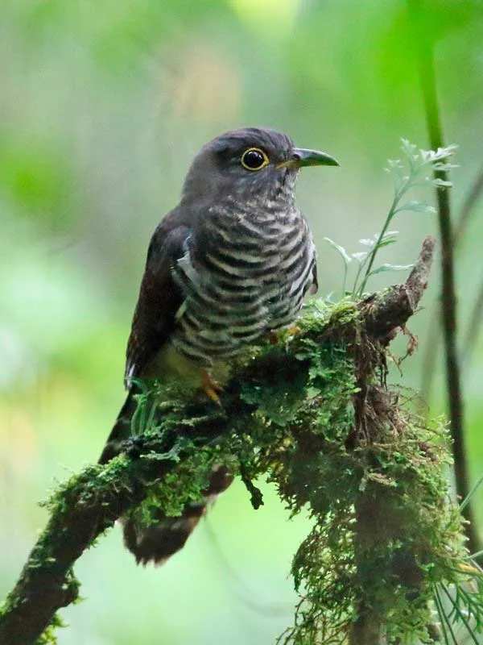
One of the best findings for a birdwatcher is the Great Blue Turaco (Corythaeola cristata). This incredibly beautiful bird is indescribable in words. It's something you want to see with your own eyes. By the way, it's easier to enjoy observing the Great Blue Turaco compared to other turaco species as it is limited in its flying abilities and often hops from branch to branch. Unfortunately, it's known that in the rural areas of the Democratic Republic of the Congo, the locals consume the meat of these birds.
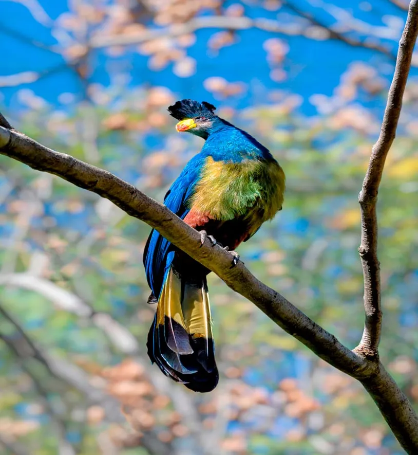
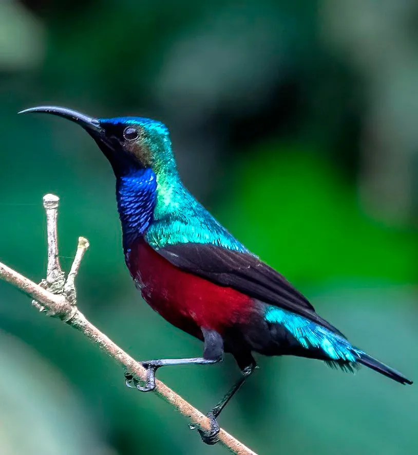
The Superb Sunbird (Cinnyris superbus) can be another lucky sighting in this forest reserve. Apart from this one, there are five other species of sunbirds found here. Another colorful bird found in this area is the White-bellied Kingfisher (Corythornis leucogaster). Additionally, the Black-and-white-casqued Hornbill (Bycanistes subcylindricus) is sure to captivate even the most seasoned bird enthusiasts. This magnificent forest-dwelling hornbill is particularly attracted to fruit trees, especially figs.
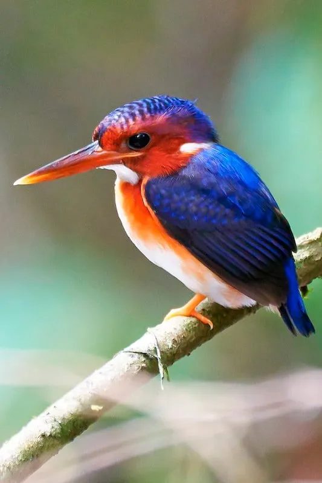
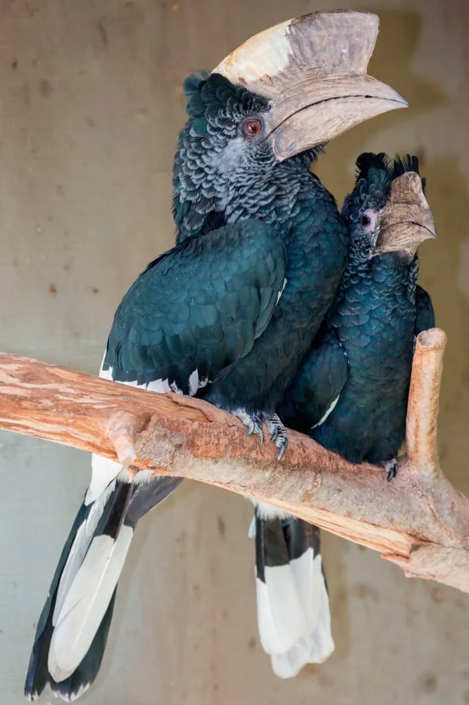
It's important to look not only at the branches but also at the ground. In Minziro, there are interesting birds that are attracted to worms, mollusks, and leeches. For example, the White-spotted Flufftail (Sarothrura pulchra) roams the undergrowth in search of food, and the Latham's Francolin (Peliperdix lathami) is a secretive and rather skittish bird.
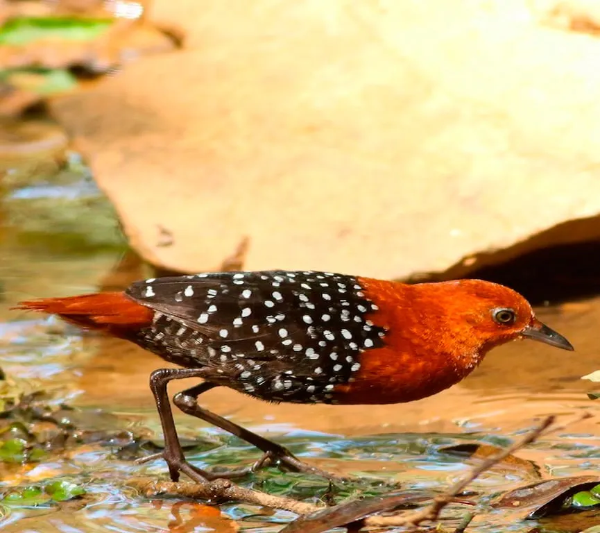
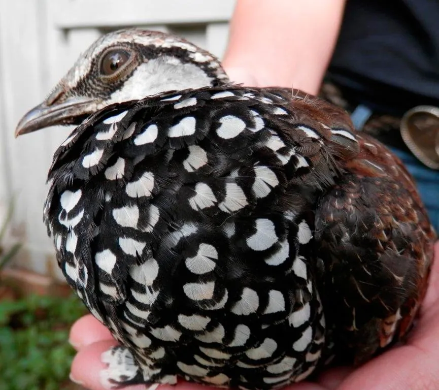
In the Minziro forest, you can encounter many other beautiful and unusual species. Unfortunately, we don't have the opportunity to mention them all in this brief overview, so we'll just name a few species that inhabit this area: the Red-headed Malimbe (Malimbus rubricollis), Yellow Longbill (Macrosphenus flavicans), Red-bellied Paradise Flycatcher (Terpsiphone rufiventer), and even the world's best sound mimic among birds, the Grey Parrot (Psittacus erithacus). The latter bird is known for its ability not only to copy complex sounds but also to associate them with objects and even concepts like colors and numbers, which indicates its high intelligence.
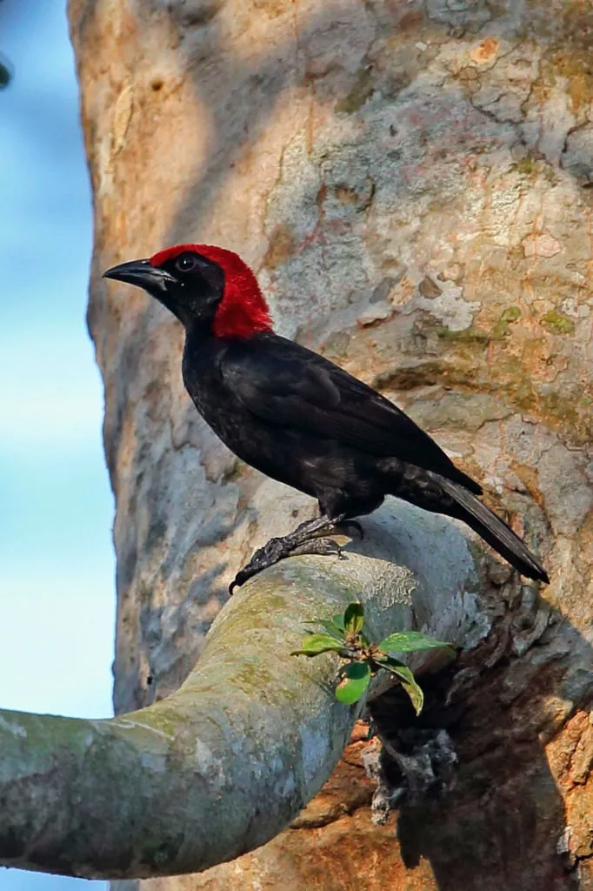
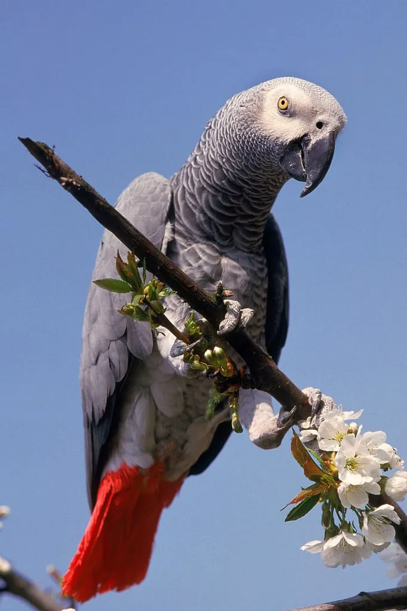
When exploring this northwestern part of Tanzania, remember that many birds traditionally found in Central and even West Africa can be seen here, making this area a truly unique and fascinating place for birdwatching.
Rubondo Island National Park
Many islands are scattered throughout Lake Victoria, including Rubondo Island north of Emin Pasha Gulf. Together with a dozen other small islands and the waters around it, it forms Rubondo Island National Park. The island is famous for being densely forested. It has never had a permanent settlement, and it hosts a large variety of birds and butterflies whose diversity largely hasn’t been affected by civilization. It is claimed that the national park is home to over 400 species of birds.
In addition to the rainforest on the main island, which is 26 kilometers (16 miles) long, there are important areas for birds such as papyrus swamps surrounded by date palms, as well as meadows and even sandy beaches. Still, up to 90% of the national park is covered in forest. There are no rivers on the island, and the soil is of volcanic origin since the island itself essentially consists of four volcanic hills.
Here one can observe Goliath Herons (Ardea goliath), so named for the fact that this bird is the largest representative of herons. It reaches an impressive height of 152 centimeters (59.8 inches). The main island is also home to a large colony of African Sea Eagles (Haliaeetus vocifer). Visitors to the park say that their predatory cries can be heard almost constantly over the forest. It is believed that Rubondo Island hosts the most densely concentrated population of these majestic eagles in the world!
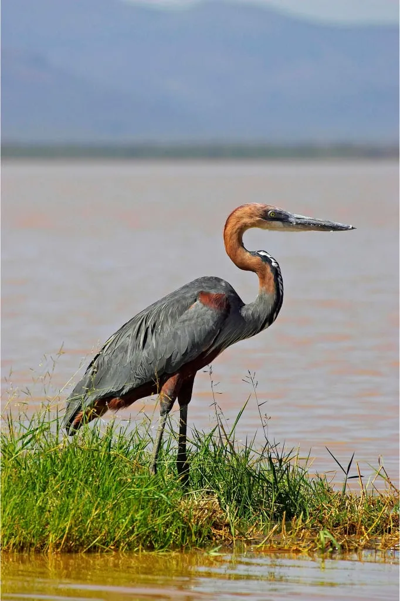

Within the national park, you can find numerous African Sacred Ibises (Threskiornis aethiopicus), birds that held special religious significance in Ancient Egypt but unfortunately suffered from mass extermination, resulting in a significant population decline. These birds were considered sacred and sacrificed to the god Thoth. Historical records estimate that up to 8 million ibises were killed during that period. Today, the species has rebounded, and its global population ranges from 200,000 to 450,000 individuals, no longer facing immediate threats.
Among the other waterfowl residing on the island, you can observe Reed Cormorants (Microcarbo africanus). These cormorants are known for their impressive diving abilities, allowing them to plunge to great depths in search of prey. However, this characteristic makes them direct competitors with fishermen, who often view them unfavorably. Additionally, Great Cormorants (Phalacrocorax carbo) can also be encountered in this area, adding to the diverse avian community present on the island.
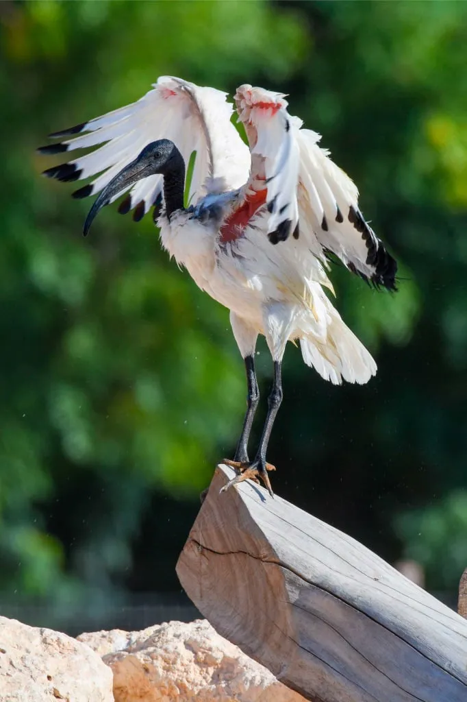
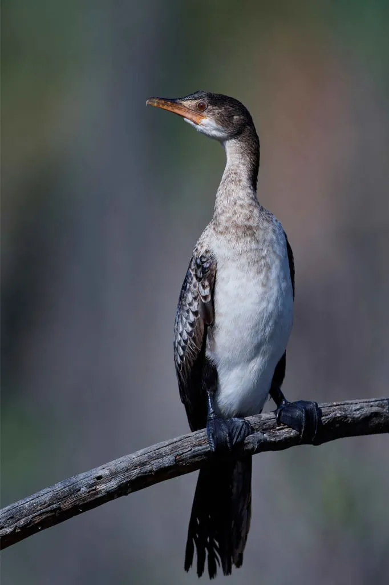
In Rubondo Island National Park, you can spot a variety of flying raptors, including the African Fish Eagles and the Western Banded Snake Eagles (Circaetus cinerascens). Waterfowl such as the Dimorphic Egrets (Egretta dimorpha) can also be observed. The park is home to the Northern Brown-throated Weavers (Ploceus castanops) and several other species of weavers.
One of the most beautiful birds here is the Red-chested Sunbird (Cinnyris erythrocercus), first described by the German zoologist Gustav Hartlaub, known for his work on exotic bird species. His contributions to ornithology include describing hundreds of new bird species and co-founding the Journal of Ornithology in 1853. Today, some bird species are named after him to honor his contribution to ornithology.
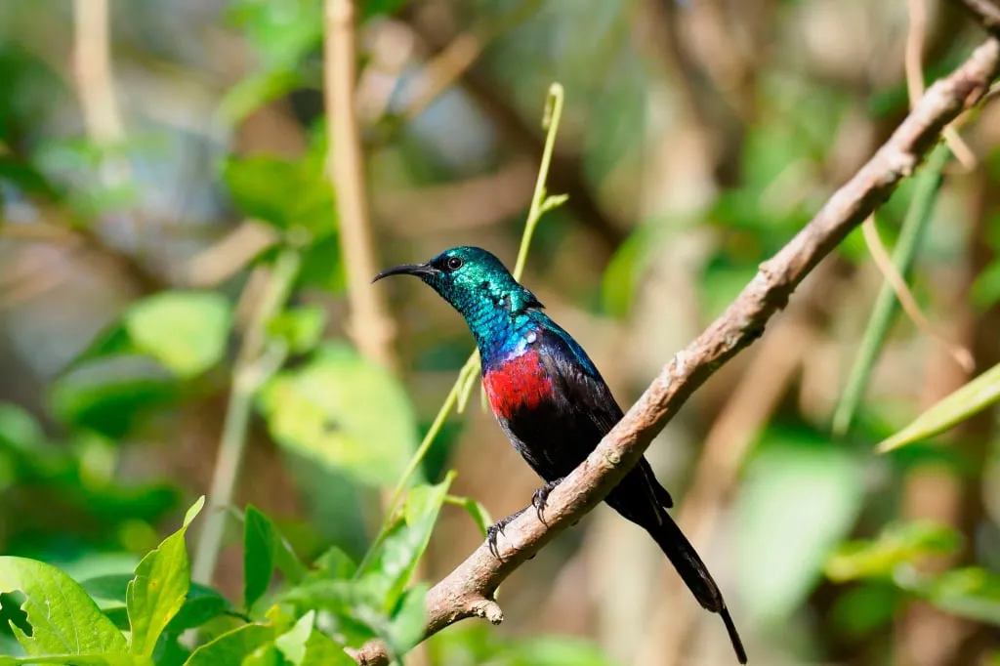
The Grey Parrot (Psittacus erithacus) can also be found on the island. Generally speaking, it is an introduced species for Rubondo, like most of the large animals that live here. The animals were brought to the island as early as the mid-1960s. One of the first to do so was zoologist and true animal advocate, Bernhard Grzimek, author of the book "Serengeti Shall Not Die". And with the Grey Parrots, it happened in 2000, when 34 birds of this species were rescued from the hands of poachers and released on the expanses of the island.
The ebird.org website lists fewer than 100 species for this location. However, there are only 9 submitted checklists so far, and we believe that many more species can be discovered in this wonderful island national park rich in species diversity.
Lake Victoria: Mwanza Gulf
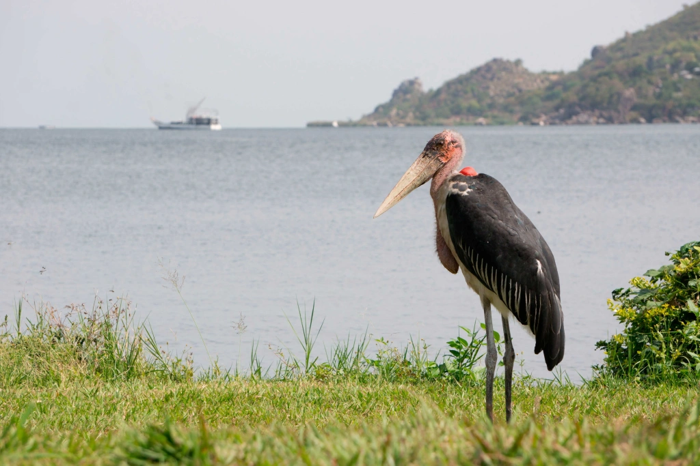
In terms of important bird areas on Lake Victoria, there are several bays and adjacent areas, in addition to groups of islands. As a rule, all of them are poorly studied and no comprehensive bird lists exist for them. These include Bunda Bay, almost bordering the Serengeti, the more northern Mara Bay, and Mwanza Bay, hosting a large city of the same name.
There are many species of birds in these locations, especially waterfowl. Due to a lack of data, we will not describe these bays or the Bumbire Islands. However, we will stop briefly on Mwanza Bay, just to draw your attention to the region as a whole and to the individual locations on Lake Victoria.
The important bird zone includes a part of the bay, coastal areas overgrown with papyrus, as well as small islands in the lake, including the largest one called Juma. The most notable bird populations here are of Great Cormorants (Phalacrocorax carbo) and Reed Cormorants (Microcarbo africanus), numbering in the hundreds or even thousands. There are also records of several thousand Little Egrets (Crinifer zonurus).

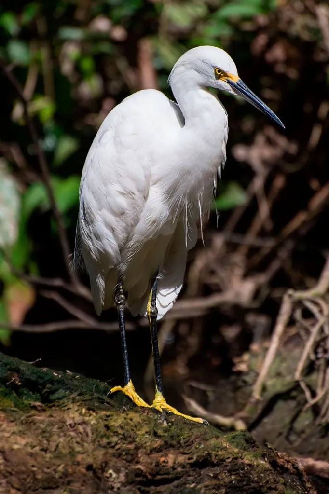
The local important bird zone also includes the tiny island of Saanane, which together with two neighboring islets forms the smallest national park in Tanzania - Saanane Island National Park. It covers an area of just over two square kilometers (0,77 square miles). Its convenience lies in the fact that it is located within the city limits of Mwanza. The park is home to over 100 bird species
Among the most interesting species here, we can mention the Eastern Plantain-eater (Crinifer zonurus), which may not have the colorful plumage of turacos but is still an original and beautiful bird with a bright yellow bill and expressive behavior. The Klaas's Cuckoo (Chrysococcyx klaas) is also impressive with its bronze and shiny green colors. It lays its eggs in the nests of other species, often sunbirds. By the way, Klaas, after which the species was named, was not a scientist or a wealthy expedition sponsor, but a simple assistant, a Khoekhoen are the nomadic indigenous people of southwestern Africa. Their language predates the Bantu languages. who found the type specimen. Ornithologist François Levaillant was a French ornithologist and explorer of Africa who embarked on a long journey across the southern part of the continent in the 18th century. He was a curious scientist, an admirer of beauty, and an avid hunter. While traveling through southern Africa, Levaillant became enamored with a young woman from the Khoekhoe people, documenting their flirtation in his notes. These writings influenced early South African novels that revolved around relationships between Europeans and African women. The Frenchman named her Narina, which means "flower" in the Khoekhoe language. Later, he described a new bird species and named it after his beloved: Apaloderma narina, also known as the Narina Trogon. François Levaillant is considered a pioneer of the travelogue genre and an innovator in the style of travel known as safari, although he did not coin the term "safari" himself. The word originated from the Swahili language after his time. considered him his friend and wanted to leave his name in history
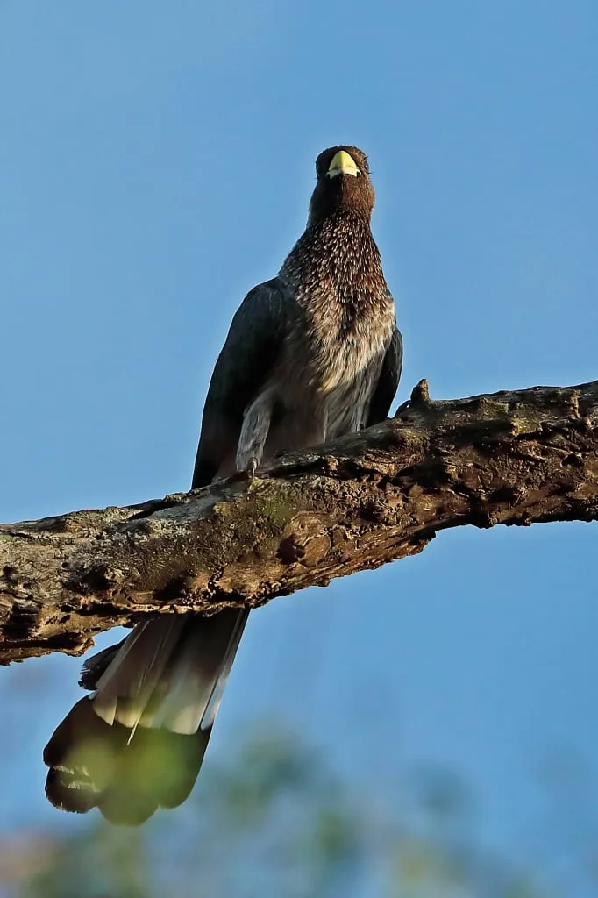
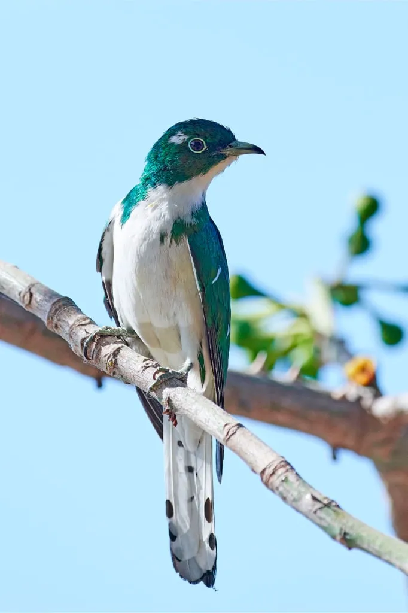
Among the local sunbirds, we can mention the Variable Sunbird (Cinnyris venustus) and the Scarlet-chested Sunbird (Chalcomitra senegalensis). In addition to nectar, their diet includes various insects, spiders, locusts, and caterpillars. But nature has equipped them best for obtaining nectar - their small weight helps them flutter easily from flower to flower, hovering in front of the ones they like, their long curved bills with sharp tips allow them to reach the nectar piercing the petals if necessary. And the long, tubular tongues of these tiny avian creatures are specially designed for convenient suction of the nectar. This applies to all sunbirds. The island is also home to a couple of other species
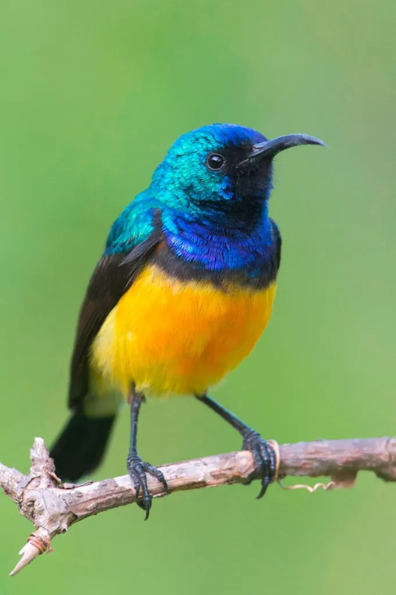
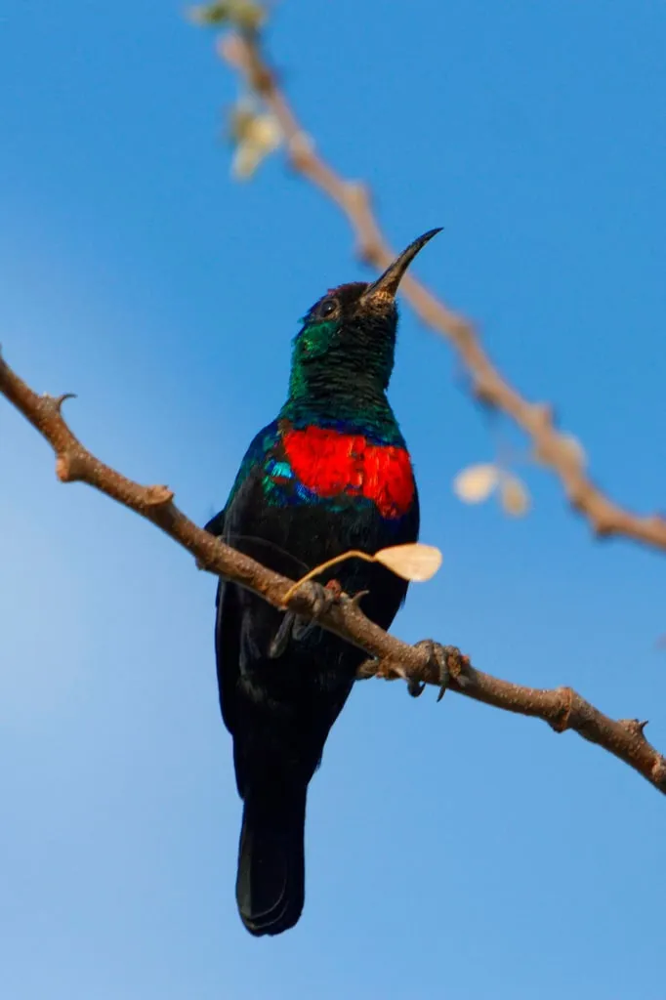
The Parasitic Weaver aka the Cuckoo Finch (Anomalospiza imberbis) is another interesting bird you can meet here. It is found in many parts of Africa but was first discovered and described here, in Tanzania, on the coast opposite Zanzibar. It is called the Parasitic Weaver because, like cuckoos, it lays eggs in other birds' nests. Its victims often include Prinias, small birds from the Cisticolidae family. And are those victims doing anything about this? Their own eggs have been rapidly evolving - changing their coloration so that parents can distinguish their eggs from the brood parasitic ones. Interestingly, the eggs of the Cuckoo Finches have also started to adapt - the parasitic birds now lay eggs that resemble the changed colors of the host's eggs. It's a kind of fascinating evolutionary race that has been observed in recent decades.
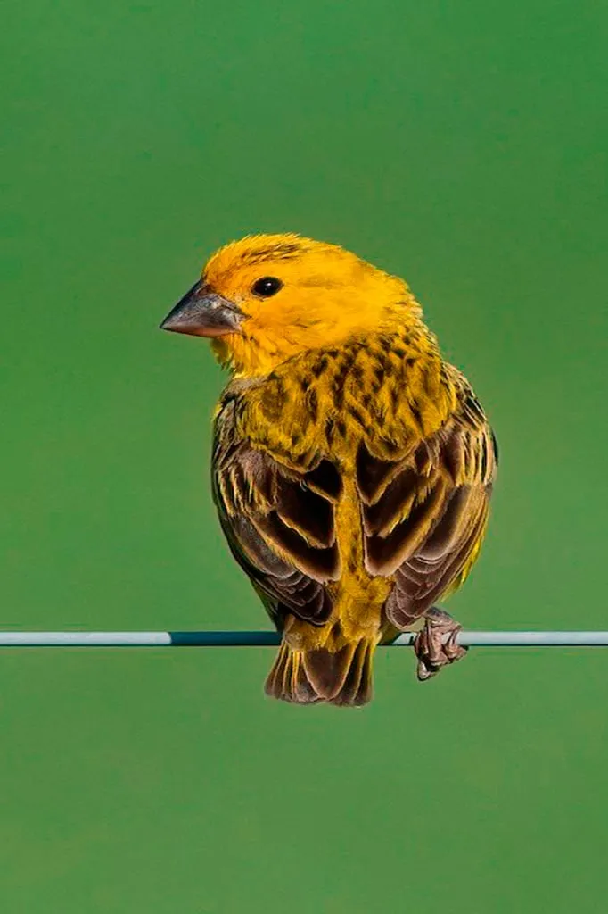
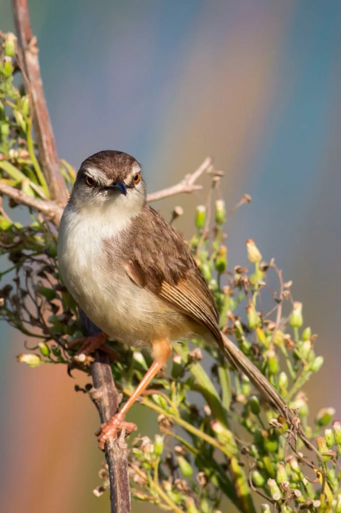
On the islands of Saanane Island National Park, you can find many other interesting birds, just like along the entire Tanzanian shore of Lake Victoria. A good example is a location that is considered one of the top 15 hotspots in Tanzania according to ebird.org, with 400 recorded bird species - one of the lodges near Speke Bay. By the way, the bay was named after John Speke was a renowned English explorer and tireless African adventurer. In the mid-19th century, he embarked on three expeditions across the uncharted continent in search of the source of the Nile. It was through his endeavors that Europeans learned about the three Great Lakes of Africa and discovered the true source of the Nile - Lake Victoria, along with its feeding river, the Kagera. the European explorer who identified Lake Victoria as the source of the Nile.
When it comes to other less well-explored Tanzania birding locations that we have described in this article, we encourage you to take that lack of data as a challenge to venture into those fascinating locations teeming with diverse avian life and be among the early explorers!
For those who want to explore the most interesting birding locations in other parts of the country, we recommend reading our overview article "Tanzania: Top 10 Locations for Birdwatching."
All content on Angelino Adventures is created with expert insights and thorough research, in line with our Editorial Policy.


Want to know more about Tanzania adventures?
Get in touch with our team! We've explored all the top destinations across Tanzania. Our Kilimanjaro-based adventure consultants are ready to share tips and help you plan your unforgettable journey.
 Tanzania Safaris
Tanzania Safaris
 Kilimanjaro and other mountains
Kilimanjaro and other mountains
 Birdwatching in Tanzania
Birdwatching in Tanzania
 Tanzania Islands
Tanzania Islands